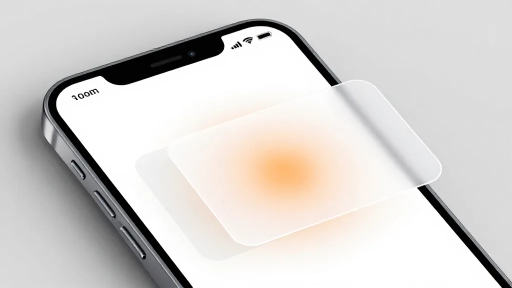
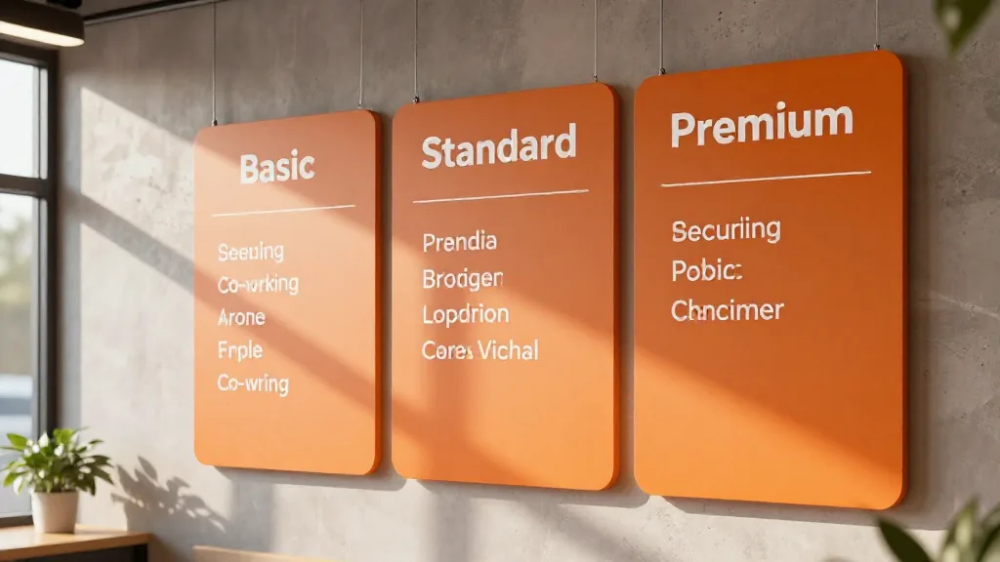

【鄭哥點評】 欄目：鄭哥博客點評
《豆包手機「轉正」——GUI 兜底 + AI 辦公養家，70 後點睇呢場變革》
圖片由 AI輔助創作（Z-Image-Turbo）
鄭哥 Hany · 2026年9月20日
今日睇到一個新聞，耐人尋味：
豆包手機「轉正」：GUI 兜底、AI 辦公養家
2026年9月14日發布，9月16日努比亞 NaviX Ultra 開售，5999元起。
京東預約 38 萬人，備貨僅 20 萬台。
9.5 個月嘅等待，從「工程樣機」到「消費者版本」——豆包手機背後嘅 3 個真相，70 後點睇？
一、真相 1：豆包手機「轉正」= 9.5 個月嘅成長

圖片由 AI輔助創作（Z-Image-Turbo）
時間表
| 時間 | 事件 |
|---|---|
| 2025.12.1 | 豆包手機技術預覽版首次亮相（努比亞 M153 工程機） |
| 2025.12 末 | 工程機 3499 元開售，3 萬台當日售罄，閒魚炒到 3.6 萬元 |
| 2026.1 | 與主流應用廠商談判（曹操出行、地圖） |
| 2026.5 | 工信部《人工智能終端智能化分級》（GB/Z 177—2026） |
| 2026.6 | 豆包推出專業版（68/200/500 元套餐） |
| 2026.9.14 | 消費者版本正式發布 + SAEP 協議 |
| 2026.9.16 | 努比亞 NaviX Ultra 開售 |
「轉正」嘅含義
工程樣機（3499 元，3 萬台）
↓
消費者版本（5999 元，20 萬台）
↓
京東預約 38 萬人
↓
正式發售
↓
「轉正」= 從極客玩具 → 普通用戶產品
二、真相 2：兩條腿走路（GUI 兜底）
圖片由 AI輔助創作（Z-Image-Turbo）
「兩條腿」嘅技術路線
| 路線 | 現狀 | 適用 |
|---|---|---|
| 官方 API 接口 | 已接入曹操出行、地圖 | 標準化服務 |
| GUI Agent 兜底 | 屏幕識別 + 模擬點擊 | 複雜任務 |
「兩條腿」嘅原因
2026 年，AI 行業競爭焦點從「大模型」轉向「Agent」
↓
可執行任務的 Agent 比 Chatbot 更有想像空間
↓
僅靠有限開發者提供 API，難以實現真正嘅「一句話操作手機」
↓
GUI Agent 兜底 = 解決 API 適配不足
榮耀嘅前車之鑑
「榮耀一直著力推動 MCP、A2A 等協議適配，但由於開發者積極性不高，生態擴張速度十分緩慢。」
字節學到嘅教訓：
- ✅ 唔可以被動等待 API 適配
- ✅ GUI 兜底 = 現實選擇
- ✅ 「主動權留給開發者」
三、真相 3：SAEP 協議（新秩序）
圖片由 AI輔助創作（Z-Image-Turbo）
協議名稱
SAEP（屏幕自動化操作聲明協議）
協議核心規則
| 規則 | 說明 |
|---|---|
| 第三方應用自主聲明 | 可拒絕全部屏幕自動化 |
| 限制具體操作 | 可限制內容發布、刪除、簽到抽獎 |
| 拒絕即時生效 | 被拒應用列入不可操作清單 |
| 30 天規則公示期 | 期內只操作自帶應用 / 字節應用 / 明確同意嘅第三方 |
SAEP 協議嘅意義
「用協議換空間，用開放換規模」
字節嘅野心：
- ✅ 唔做手機硬件
- ✅ 唔重做操作系統
- ✅ 做 Android 之上嘅「AI 操作層」
「如果豆包助手能成為用戶默認的系統級 AI，那它就有機會站到所有 App 的前面，成為用戶意圖的第一個入口。」
四、真相 4：AI 辦公養家（商業模式）

圖片由 AI輔助創作（Z-Image-Turbo）
「Agent 難以收費」嘅困境
「GUI Agent 需要持續識別屏幕、規劃操作路徑，每一步執行後重新判斷界面狀態，有效降低了系統延遲，但成本（Token / 算力）遠高於普通 Chatbot。」
「由於用戶沒有迫切嘅提效需求，GUI Agent 難以通過向用戶收費打通商業閉環。」
「AI 辦公養家」嘅思路
| 維度 | 策略 |
|---|---|
| 技術 | Agent 能力 |
| 場景 | 辦公場景（錄音 / 數據 / 內容） |
| 收費 | 訂閱模式（專業版） |
豆包專業版（2026.6）
| 套餐 | 價格（月） |
|---|---|
| 標準版 | ¥68 |
| 加強版 | ¥200 |
| 高級版 | ¥500 |
「AI 辦公養家」嘅含義
Agent 能力（GUI 兜底）
↓
辦公場景（剛需）
↓
訂閱模式（68-500 元/月）
↓
商業閉環
↓
「養家」= 可持續收入
五、行業現狀（2026 年 = 智能體手機元年）
AI 手機標準（GB/Z 177—2026）
| 等級 | 描述 |
|---|---|
| L1 | 響應級 |
| L2 | 工具級 |
| L3 | 輔助級 |
| L4 | 協同級 |
發布部門：工信部、商務部、市場監管總局
「全球首款」三家
| 公司 | 產品 |
|---|---|
| 榮耀 | 智能體手機 |
| 努比亞 | NaviX Ultra |
| 階躍星辰 | 智能體手機 |
「三個『全球首款』同時出現，恰恰說明這個賽道，誰都能定義首款。但也說明了，行業仍處於早期。」
Counterpoint + IDC 預測
| 機構 | 預測 |
|---|---|
| Counterpoint | 2026 年具備 GenAI 功能嘅智能手機將佔全球出貨量 45% |
| IDC | 2026 年中國 AI 手機出貨量 1.47 億台，佔中國市場 53% |
業內普遍將 2026 年視為「智能體手機元年」
六、過去嘅「生態封殺」與今日嘅「新秩序」
2025.12：一代嘅碰壁
一代豆包手機發布
↓
AI 直接讀屏、模擬點擊操作各大 App
↓
微信 / 淘寶 / 銀行類應用集體「拉黑」
↓
核心功能被迫下線
2026.9：二代嘅「敲門」
SAEP 協議發布
↓
「先敲門，App 同意開放什麼，AI 才能做什麼」
↓
MCP / A2A 協議驅動
↓
App 選擇按標準開放能力
↓
「用協議換空間，用開放換規模」
超級 App 嘅反擊
| 公司 | 產品 |
|---|---|
| 騰訊 | 微信測試「小微」 |
| 阿里 | 支付寶推出「阿寶」 |
目的：
- ⚠️ 防御性布局
- ⚠️ 防止外部 AI 智能體架空自己嘅核心入口
七、用戶數據（QuestMobile 2026.6）
| 維度 | 終端廠商 AI 應用 | AI 原生 App |
|---|---|---|
| 月活 | 7.55 億（+14%） | 4.99 億（+85.4%） |
| 月人均使用次數 | 51.4 次 | 92.7 次 |
| 月人均使用時長 | 9.8 分鐘 | 183 分鐘（+40%） |
| 使用時長差距 | — | 18.7 倍 |
關鍵洞察
「手機廠商靠硬件預裝贏了體量，卻在使用深度上被甩開了身位。」
八、對鄭哥 4 大業務嘅啟示
1. 電子消費品（音箱 / AI 終端）
啟示：
- ✅ AI 終端 = 軟件 + 協議 + 商業模式
- ✅ GUI Agent = 兜底方案
- ✅ 專業版訂閱 = 商業模式
行動：
- ✅ 關注 AI 終端訂閱模式
- ✅ 準備 AI 音箱 + 大模型 + 訂閱服務
- ✅ 印度 / 東南亞推 AI 終端 + 訂閱
2. AI 算力
啟示：
- ✅ 端側 + 雲端 = 主流
- ✅ GUI Agent = 高算力消耗
- ✅ 混合方案 = 性價比
行動：
- ✅ 提供端雲混合算力
- ✅ 關注 GUI Agent 算力需求
- ✅ 拓展 AI Native 應用算力客戶
3. 跨境電商
啟示：
- ✅ AI 手機出海 = 趨勢
- ✅ 訂閱服務出海 = 長期
- ✅ 5999 vs 3499 = 海外空間
行動：
- ✅ 關注 AI 終端 + 訂閱出海
- ✅ 印度 / 東南亞 AI 終端供應
4. 年輕人投資
啟示：
- ✅ 字節跳動 = AI 操作系統層
- ✅ 訂閱模式 = 長期賽道
- ✅ AI Native App = 月活 4.99 億
行動：
- ✅ 關注字節 + 智能體手機概念股
- ✅ 投資訂閱模式公司
- ✅ 投資 AI Native App
九、70 後嘅 3 個判斷
判斷 1：GUI 兜底 = 現實選擇
事實：
- ✅ 大模型 → Agent → GUI Agent → 落地
- ⚠️ API 生態唔夠成熟
- ✅ GUI = 現實路徑
70 後嘅機會：
- ✅ 傳統行業 + GUI Agent = 改造機會
- ✅ 傳統 App + AI = 升級機會
判斷 2：AI 辦公 = 商業化路徑
事實：
- ✅ Agent 難以向用戶收費
- ✅ 辦公場景 = 剛需
- ✅ 訂閱模式 = 長期
70 後嘅機會：
- ✅ AI 辦公 = 長期賽道
- ✅ 專業版訂閱 = 商業模式
- ✅ B 端 AI 辦公 = 大客戶
判斷 3：智能體手機元年 = 2026
事實：
- ✅ 2026 = 「智能體手機元年」
- ✅ 45% 全球 AI 手機佔比
- ✅ 53% 中國 AI 手機佔比
70 後嘅機會：
- ✅ AI 終端供應鏈 = 長期機會
- ✅ 訂閱模式出海 = 長期賽道
- ✅ AI 辦公 B 端 = 大客戶市場
十、結語
豆包手機「轉正」嘅故事：
工程樣機（3499 元）
↓
「轉正」到消費者版本（5999 元）
↓
GUI 兜底（技術）
↓
SAEP 協議（秩序）
↓
AI 辦公養家（商業模式）
↓
智能體手機元年（2026）
70 後嘅 3 個機會：
1. 傳統行業 + GUI Agent（改造）
2. AI 辦公 + 訂閱模式（商業模式）
3. AI 終端 + 訂閱出海（長期）
你呢，準備好未？
📞 合作聯繫
WhatsApp: +852 6641 7912
七善門科技 · 星辰算力
#豆包手機 #轉正 #GUI兜底 #AI辦公養家 #SAEP協議 #字節跳動 #努比亞NavixUltra #智能體手機元年 #訂閱模式 #70後 #跨境電商 #星辰算力 #七善門科技
[ZHENG GE REVIEW] Column: Hany Blog Review
"Doubao Phone Goes Official" — GUI Fallback + AI-Office Subscriptions. A Gen-Xer's Take.
Image AI-assisted (Z-Image-Turbo)
Hany Zheng Ge · September 20, 2026
Today's news is worth a second look:
Doubao phone "goes official": GUI fallback, AI-office as the cash cow
Announced September 14; Nubia NaviX Ultra on sale September 16, starting at ¥5,999.
380,000 JD reservations vs. only 200,000 units in stock.
9.5 months of waiting, from engineering prototype to consumer release — 3 truths behind the Doubao phone, viewed by a Gen-X trader.
1. Truth 1: "Going Official" = 9.5 Months of Growth
Image AI-assisted (Z-Image-Turbo)
Timeline
| Date | Event |
|---|---|
| 2025-12-01 | Tech preview (Nubia M153 prototype) |
| Late 2025.12 | Prototype ¥3,499 — 30k sold out; resale hit ¥36k |
| 2026.1 | Talks with Cao Cao Mobility, Maps |
| 2026.5 | MIIT GB/Z 177—2026 (AI terminal grading) |
| 2026.6 | Doubao Pro launched (¥68/¥200/¥500 tiers) |
| 2026-09-14 | Consumer release + SAEP protocol |
| 2026-09-16 | Nubia NaviX Ultra on sale |
What "Going Official" Means
Prototype (¥3,499, 30k units)
↓
Consumer (¥5,999, 200k units)
↓
380k JD reservations
↓
Official sale
↓
"Official" = from geek toy → regular-user product
2. Truth 2: Two Legs (GUI Fallback)
Image AI-assisted (Z-Image-Turbo)
The "Two-Legged" Path
| Track | State | Use |
|---|---|---|
| Official APIs | Cao Cao Mobility, Maps | Standard services |
| GUI Agent fallback | Screen recognition + simulated clicks | Complex tasks |
Why Two Legs
2026: AI focus shifted from "LLMs" → "Agents"
↓
Action-capable Agents beat chatbots
↓
Relying on a handful of dev-provided APIs can't deliver "one sentence runs your phone"
↓
GUI Agent fallback = solves the API coverage gap
Honor as Cautionary Tale
"Honor pushed MCP/A2A hard but the dev community didn't bite, so the ecosystem grew slowly."
ByteDance's lesson:
- ✅ Don't wait passively for APIs
- ✅ GUI fallback = pragmatic choice
- ✅ Leave the initiative to developers
3. Truth 3: SAEP Protocol (The New Order)
Image AI-assisted (Z-Image-Turbo)
Protocol Name
SAEP (Screen Automation Execution Protocol)
Core Rules
| Rule | Detail |
|---|---|
| Self-declaration | 3rd-party apps can refuse all screen automation |
| Restrict operations | Can block publishing, deletion, check-in draws |
| Immediate effect | Refused apps go on the no-go list |
| 30-day notice | Only pre-installed / ByteDance / opt-in apps operable |
Why SAEP Matters
"Trade protocols for space, trade openness for scale."
ByteDance's ambition:
- ✅ No phone hardware
- ✅ No new OS
- ✅ Be the "AI operating layer" on top of Android
"If Doubao becomes the default system-level AI, it stands in front of every app — the first entry to user intent."
4. Truth 4: AI-Office as Cash Cow (Business Model)
Image AI-assisted (Z-Image-Turbo)
The "Agent Monetization" Trap
"GUI Agents keep recognizing, planning, and re-evaluating screens — every step adds reasoning tokens and compute, far more than a normal chatbot."
"Without urgent efficiency pressure on users, GUI Agents struggle to monetize end-user fees alone."
AI-Office Logic
| Pillar | Strategy |
|---|---|
| Tech | Agent capabilities |
| Scene | Office (recording / data / content) |
| Revenue | Subscriptions (Pro) |
Doubao Pro (2026.6)
| Tier | Price / month |
|---|---|
| Standard | ¥68 |
| Plus | ¥200 |
| Premium | ¥500 |
"AI-Office = Family Income"
Agent capability (GUI fallback)
↓
Office scene (real demand)
↓
Subscription model (¥68–500/month)
↓
Business loop closed
↓
"Sustains the family" = durable revenue
5. Industry State: 2026 = Year-One of Agent Phones
AI Phone Standard (GB/Z 177—2026)
| Level | Description |
|---|---|
| L1 | Reactive |
| L2 | Tool-using |
| L3 | Assistive |
| L4 | Collaborative |
Issuers: MIIT, MOFCOM, SAMR
Three "World-Firsts"
| Company | Product |
|---|---|
| Honor | Agent phone |
| Nubia | NaviX Ultra |
| Stepfun | Agent phone |
"Three 'world-firsts' at once means anyone can claim first — and the industry is still early."
Forecasts: Counterpoint + IDC
| Source | Forecast |
|---|---|
| Counterpoint | 2026 GenAI-capable phones: 45% of global shipments |
| IDC | 2026 China AI phone shipments: 147M units (53% share) |
2026 is widely seen as Year-One of agent phones
6. Yesterday's "Ecosystem Blacklist" vs Today's New Order
2025.12: Gen-1's Crash
Gen-1 Doubao phone launches
↓
AI reads screens + simulates clicks across major apps
↓
WeChat / Taobao / banking apps blacklist it
↓
Core functions forced offline
2026.9: Gen-2's "Knock Before Entering"
SAEP protocol published
↓
"Knock first; what apps open is what AI can do"
↓
MCP / A2A driving the bus
↓
Apps choose what to open per the standard
↓
"Trade protocols for space, trade openness for scale"
Super-Apps Strike Back
| Company | Product |
|---|---|
| Tencent | WeChat tests "Xiaowei" |
| Alibaba | Alipay launches "Abao" |
Goal:
- ⚠️ Defensive posture
- ⚠️ Don't let external AI agents hollow out their entry points
7. User Data (QuestMobile, June 2026)
| Metric | OEM AI apps | AI-native apps |
|---|---|---|
| MAU | 755M (+14%) | 499M (+85.4%) |
| Uses / user / month | 51.4 | 92.7 |
| Time / user / month | 9.8 min | 183 min (+40%) |
| Time gap | — | 18.7× |
Key Insight
"OEMs won the install war but lost the engagement war."
8. Implications for My Four Businesses
1. Consumer Electronics (speaker / AI terminal)
Implications:
- ✅ AI terminal = software + protocol + business model
- ✅ GUI Agent = fallback
- ✅ Pro subscription = business model
Actions:
- ✅ Track AI-terminal subscription patterns
- ✅ Prep AI speaker + LLM + subscription
- ✅ India / SEA push AI terminals + subs
2. AI Compute
Implications:
- ✅ Edge + cloud = mainstream
- ✅ GUI Agent = high compute load
- ✅ Hybrid = best $/perf
Actions:
- ✅ Offer edge-cloud hybrid compute
- ✅ Watch GUI Agent compute demand
- ✅ Grow AI-native compute customers
3. Cross-Border E-Com
Implications:
- ✅ AI phone overseas = trend
- ✅ Subscriptions overseas = long-term
- ✅ ¥5,999 vs ¥3,499 = overseas margin room
Actions:
- ✅ Track AI terminal + sub for export
- ✅ Supply AI terminals to India / SEA
4. Young-Person Investing
Implications:
- ✅ ByteDance = AI OS layer
- ✅ Subscription models = long-term
- ✅ AI-native apps = 499M MAU
Actions:
- ✅ Watch ByteDance + agent phone plays
- ✅ Back subscription-model companies
- ✅ Back AI-native apps
9. Three Gen-X Calls
Call 1: GUI Fallback = The Realistic Choice
Facts:
- ✅ LLM → Agent → GUI Agent → ships
- ⚠️ API ecosystem not mature
- ✅ GUI = real-world path
Gen-X edge:
- ✅ Traditional industries + GUI Agent = upgrade
- ✅ Legacy apps + AI = lift
Call 2: AI-Office = The Monetization Path
Facts:
- ✅ Agents hard to charge end users
- ✅ Office = real demand
- ✅ Subscription = long-term
Gen-X edge:
- ✅ AI-office = long-term play
- ✅ Pro subscriptions = business model
- ✅ B2B AI office = big accounts
Call 3: Year-One of Agent Phones = 2026
Facts:
- ✅ 2026 = Year-One
- ✅ 45% global AI phone share
- ✅ 53% China AI phone share
Gen-X edge:
- ✅ AI terminal supply chain = long game
- ✅ Subscriptions overseas = long track
- ✅ B2B AI office = enterprise market
10. Closing
The "Doubao Goes Official" story:
Prototype (¥3,499)
↓
Consumer (¥5,999)
↓
GUI fallback (engineering)
↓
SAEP protocol (order)
↓
AI-office subscriptions (business model)
↓
Year-One of agent phones (2026)
Three Gen-X opportunities:
1. Traditional industries + GUI Agent (upgrade)
2. AI-office + subscriptions (monetization)
3. AI terminals + subscriptions abroad (long game)
Are you ready?
📞 Get in touch
WhatsApp: +852 6641 7912
Qishanmen Tech · Star Compute
#DoubaoPhone #GUIFallback #AIOfficeSubscriptions #SAEP #ByteDance #NubiaNavixUltra #AgentPhoneYearOne #Subscriptions #GenXer #CrossBorderEcom #StarCompute #QishanmenTech